About Me
My name is Gunner. I grew up in San Diego, California and currently live and go to school in Seattle, Washington.
I am a big fan of surfing. During COVID, when the beach was the only thing open, I started surfing 5–6 days a week. The next summer I got my first job as a surf instructor, where I taught small group lessons on the weekends and led the camp's flagship kids' camp in the day. We would move the boards three blocks from the office to the beach using two rusted pickup trucks. The most boards we ever fit on one truck was 62.
I continued to surf, play sports, and learn drums and piano. I chose to go to UW because of its location, academic reputation, and gorgeous campus. I've come to really enjoy Seattle and UW, especially its proximity to both water and snow.
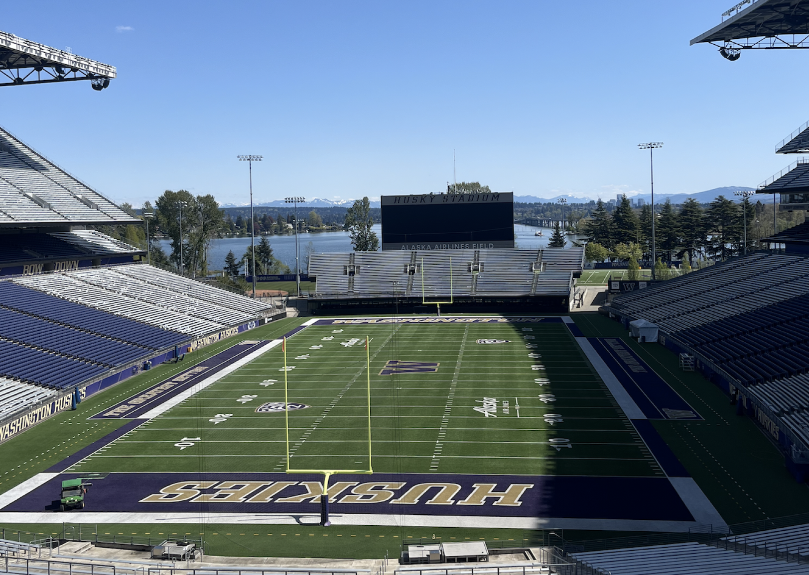
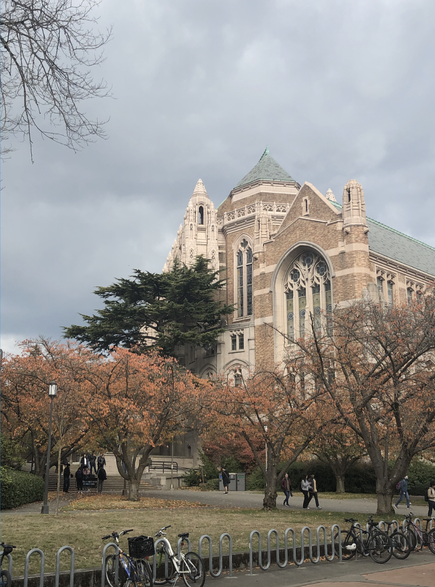
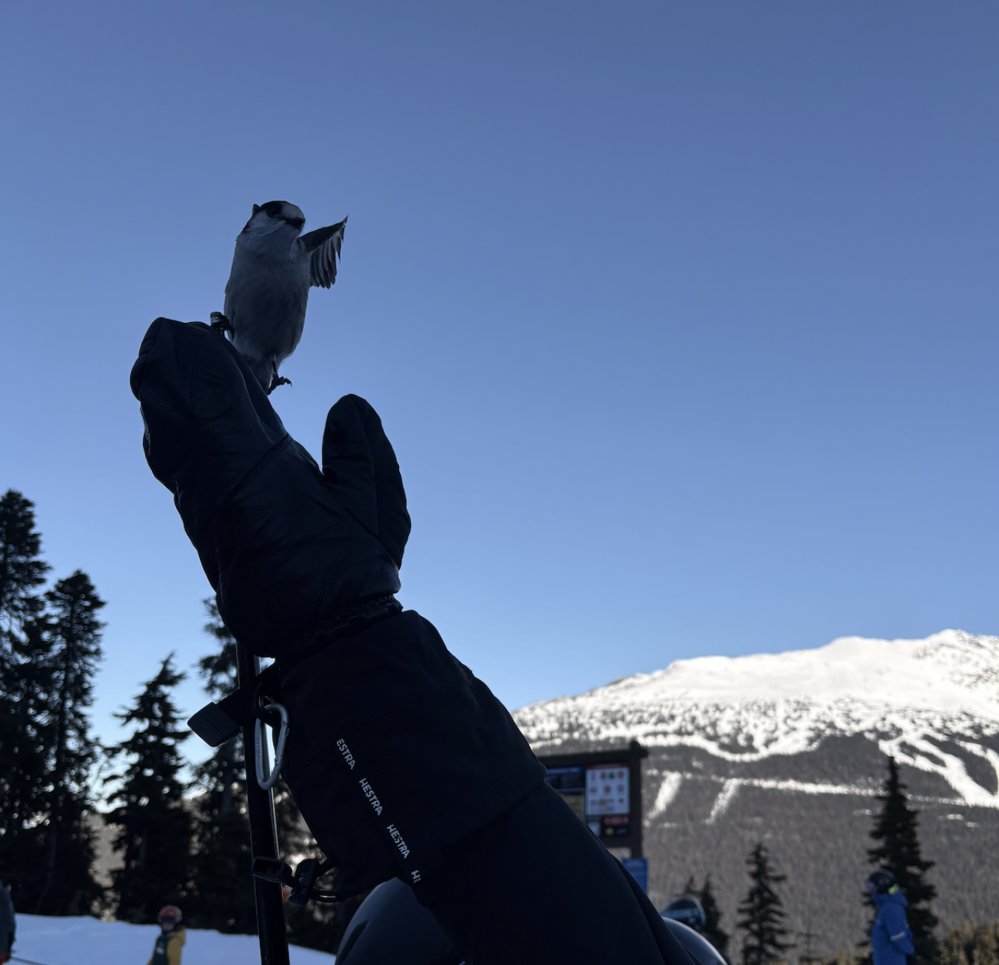
After my freshman year at UW, I was accepted into a pilot program led by Jaime Snyder and Temi Odumosu to study technological interventions in Ethiopia. While there I met students and faculty at Addis Ababa University (AAU), and heard firsthand about challenges and limitations of traditional education in Ethiopia. I interviewed both professors and recent graduates of their Information school, and conducted surveys across employees at local tech and tech-adjacent companies. My final deliverable was a proposal for an online educational program capable of teaching local in-demand skills to those who cannot attend traditional university due to location, familial obligation, or financial reasons. The final proposal was presented to AAU staff and published on UW's Visualization Studies Design Research website.
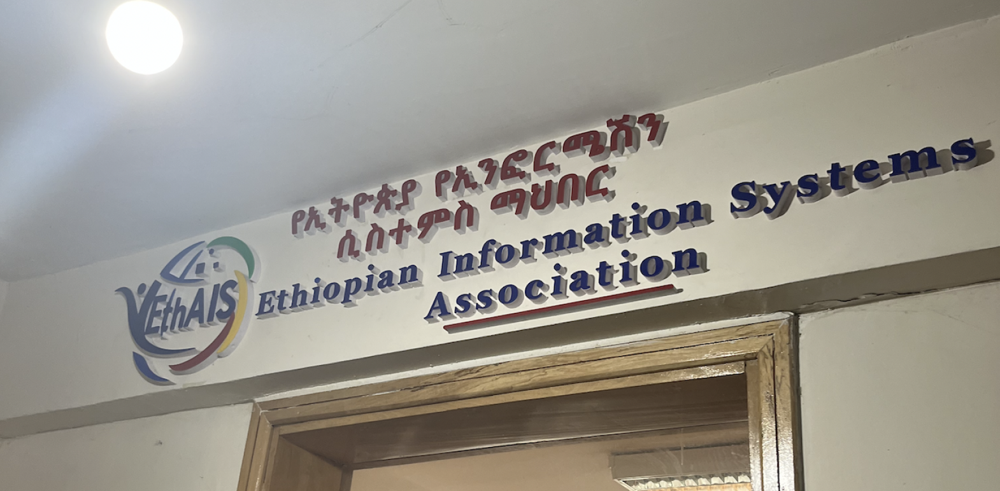
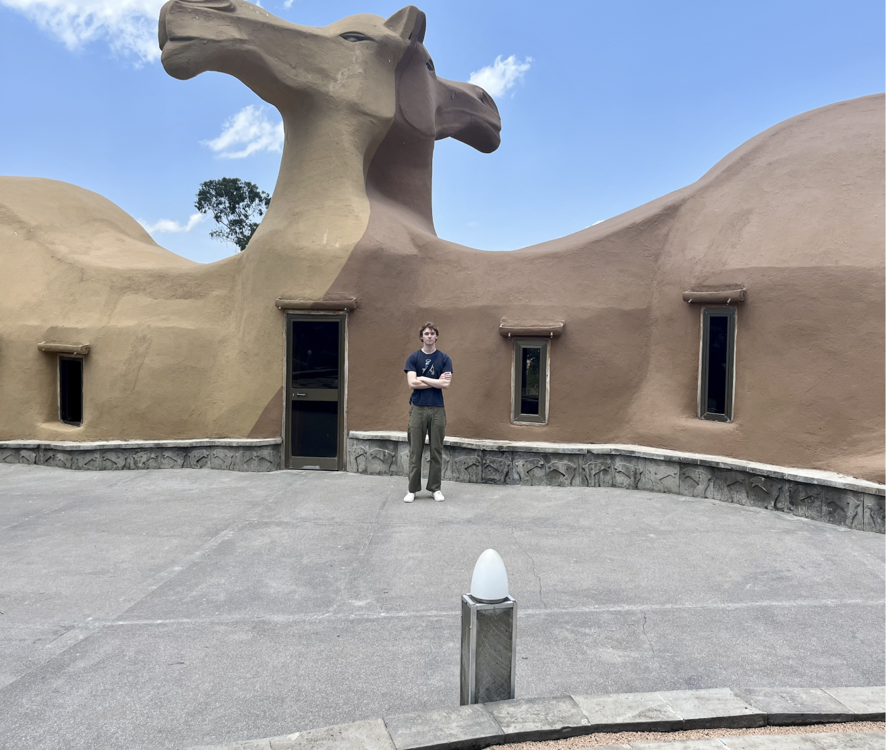
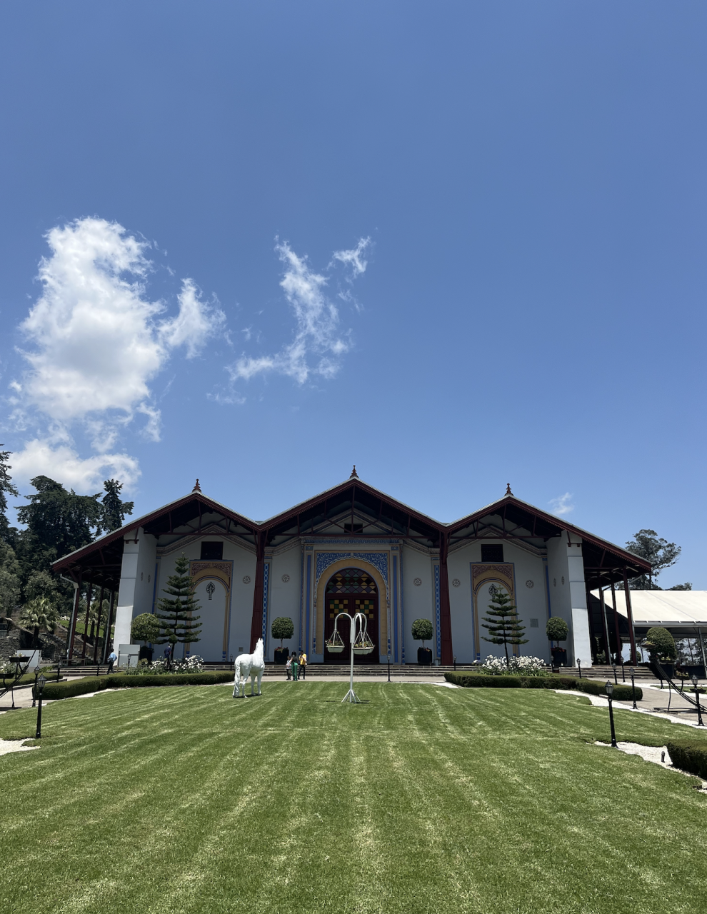
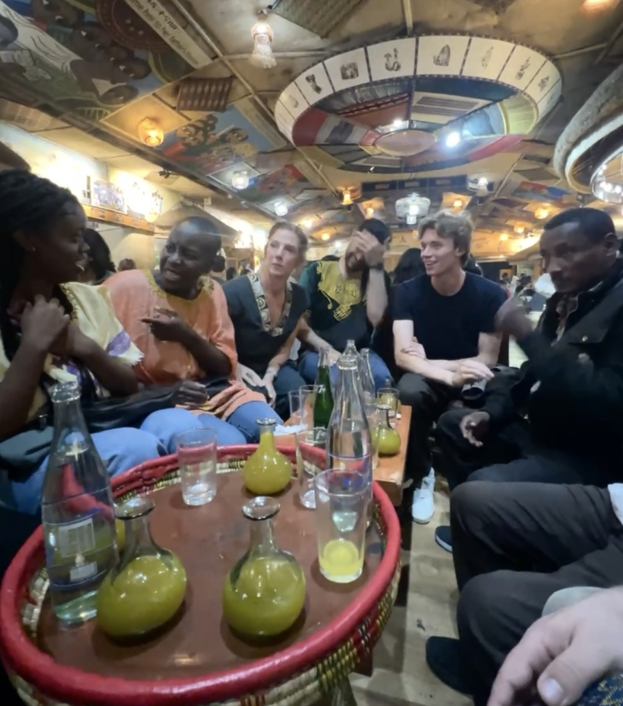
During my junior year, four of my friends and I decided to forgo a traditional abroad program and backpack Europe for 3 months (roughly 1 winter quarter). We traveled to 26 countries, visited a lot of churches and museums, and met many new people, some of whom we still keep in touch with.
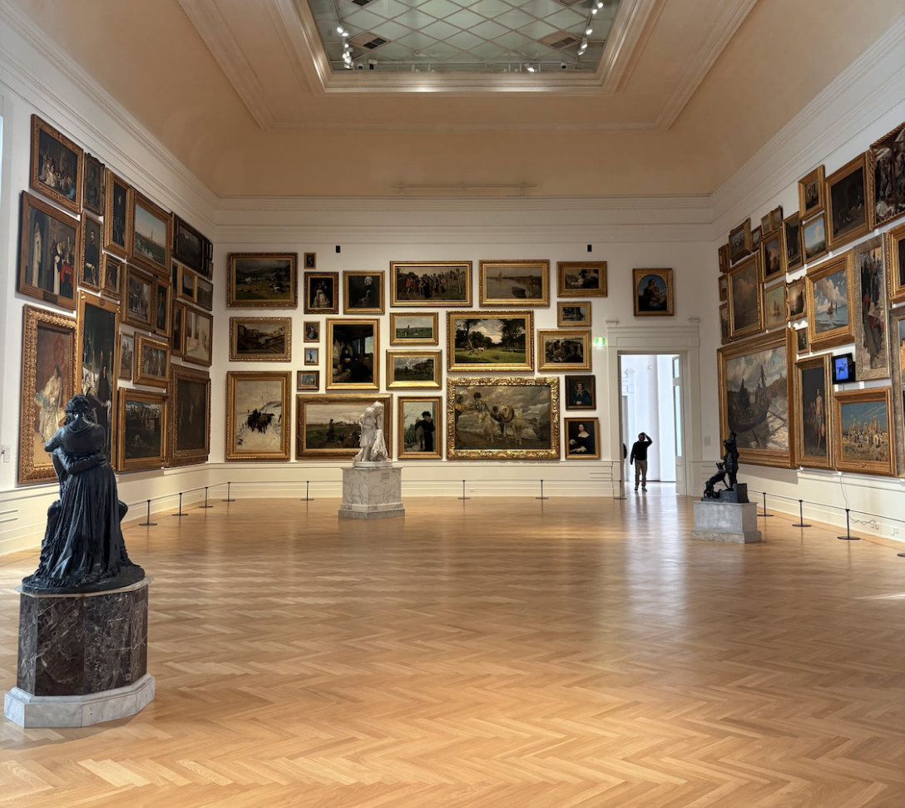
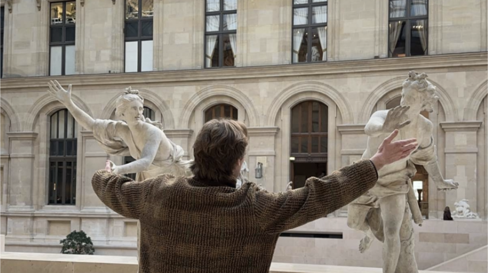
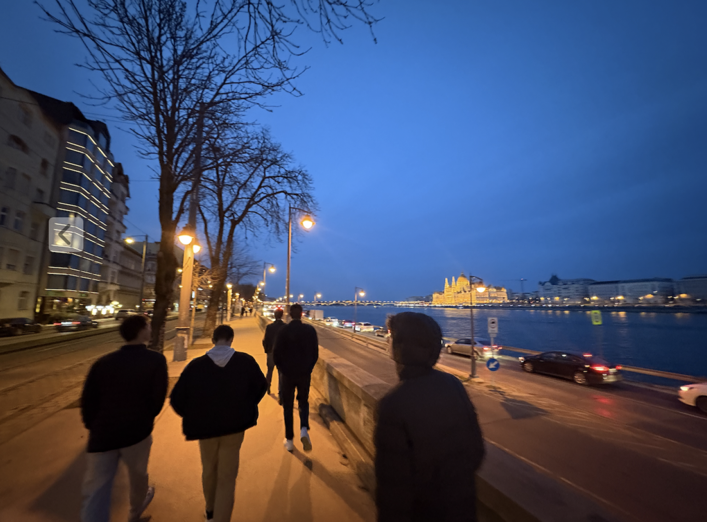
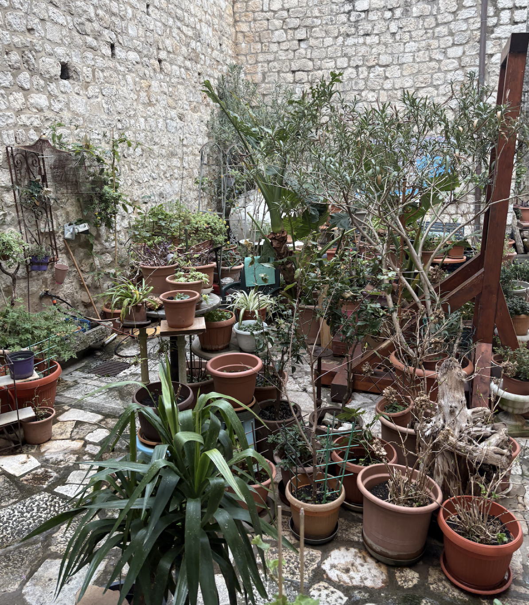
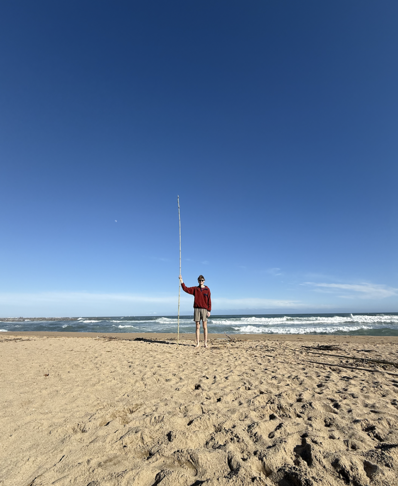
I'm currently finishing my degree in Informatics and look forward to the future. If you'd like to reach out, don't hesitate to.
Gunner Dohrenwend